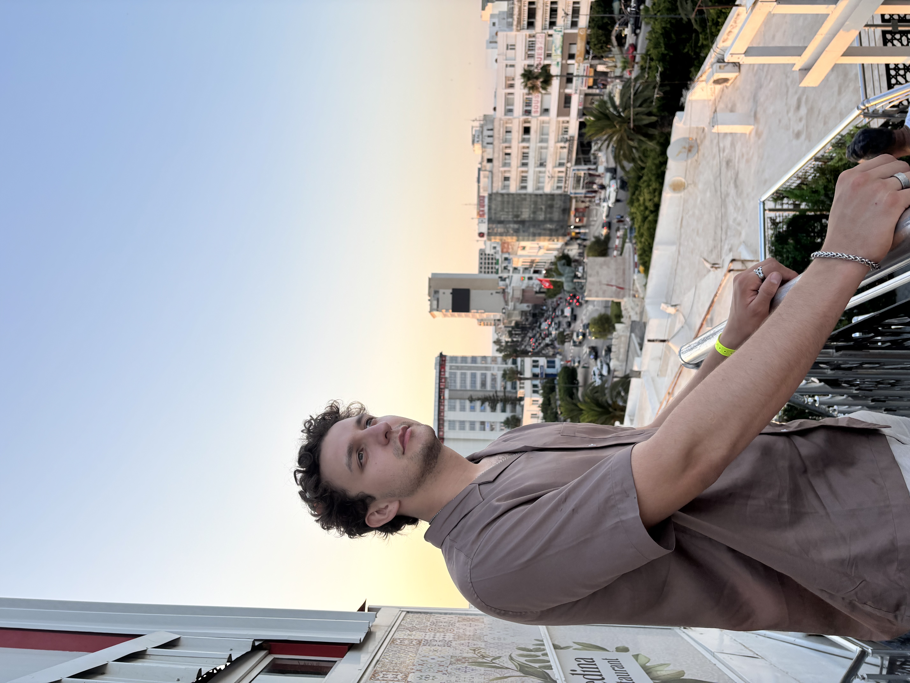

Vzdelanie
STU FEI(Predpokladané ukončenie štúdia: 06/2026)
09/2022 – TERAZ
Bakalársky titul v odbore aplikovaná informatika (prebieha)
- Relevantné predmety: Webové technológie, Objektovo orientované programovanie, Lineárna algebra, Operačné systémy, Analýza a zložitosť algoritmov
Počítačové zručnosti
- Swift | Java | C++ | C | Python | MATLAB | MySQL | Git
Jazykové zručnosti
- Slovenčina – Expert (C2)
- Čeština – Expert (C2)
- Angličtina – Expert (C2)
- Ruština – Mierne pokročilý (B1)
- Polština – Mierne pokročilý (B1)